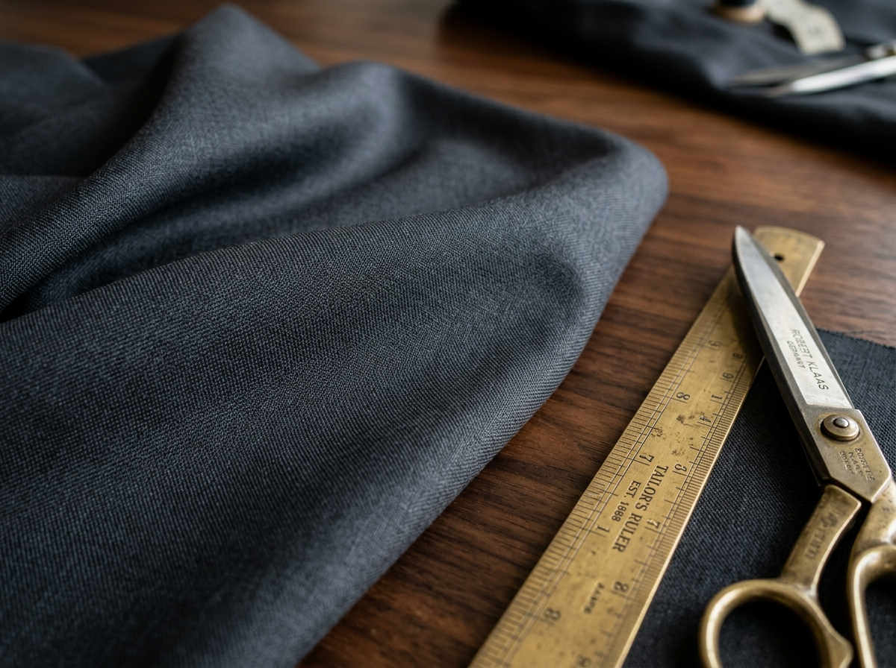
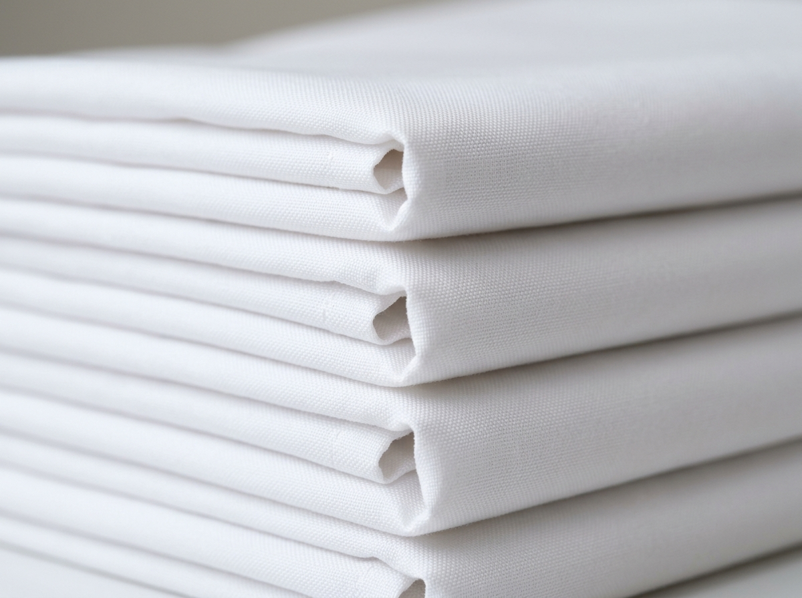
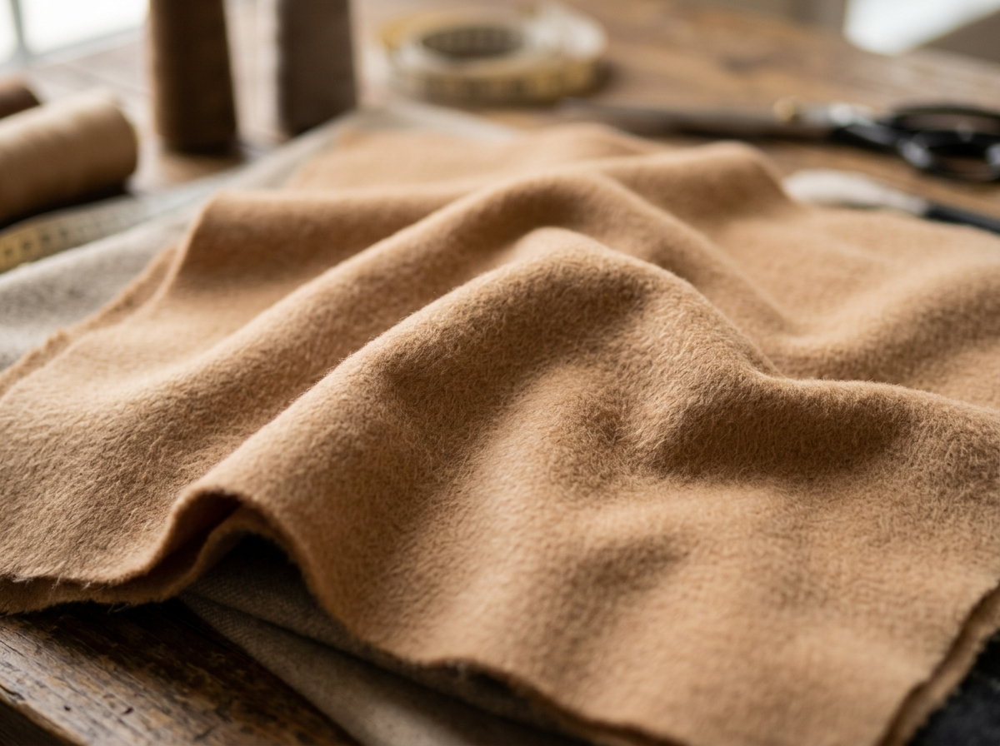
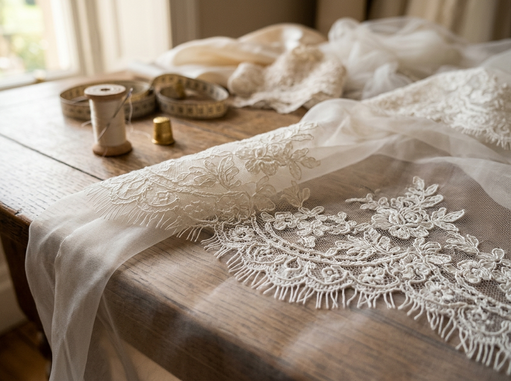
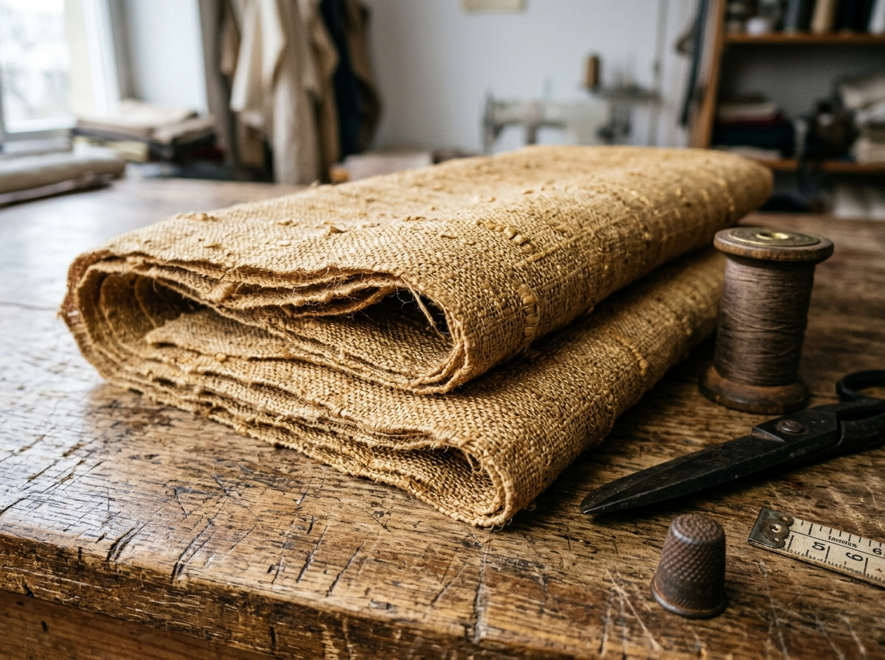
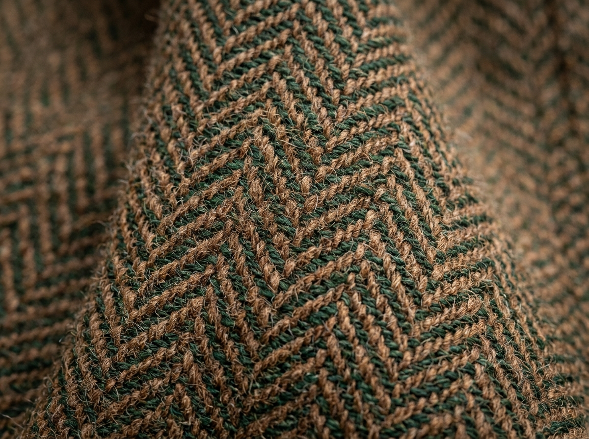
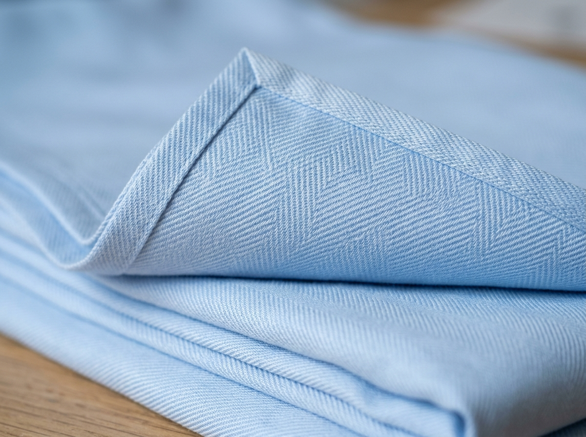
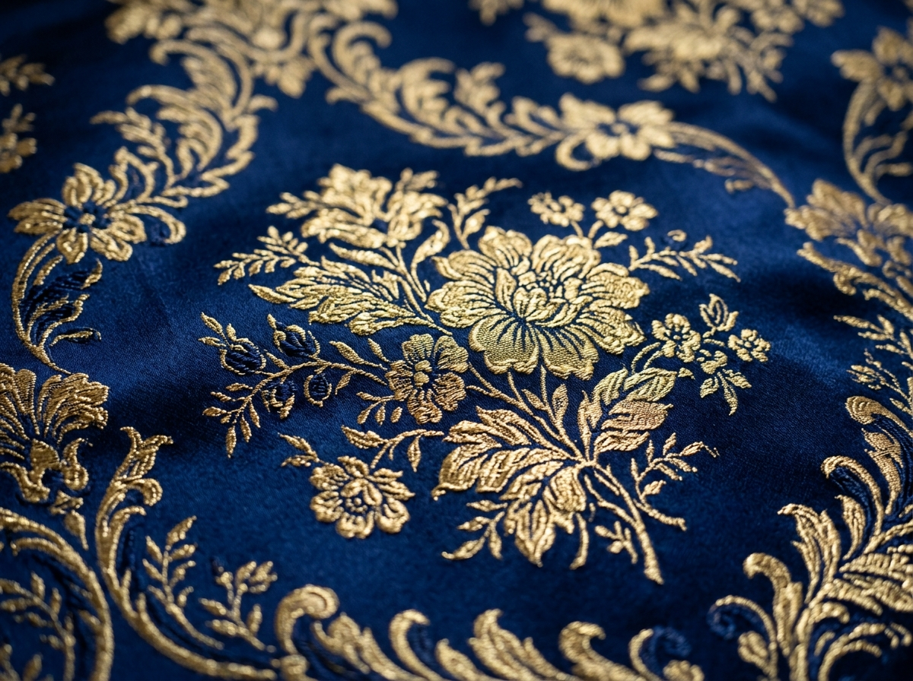
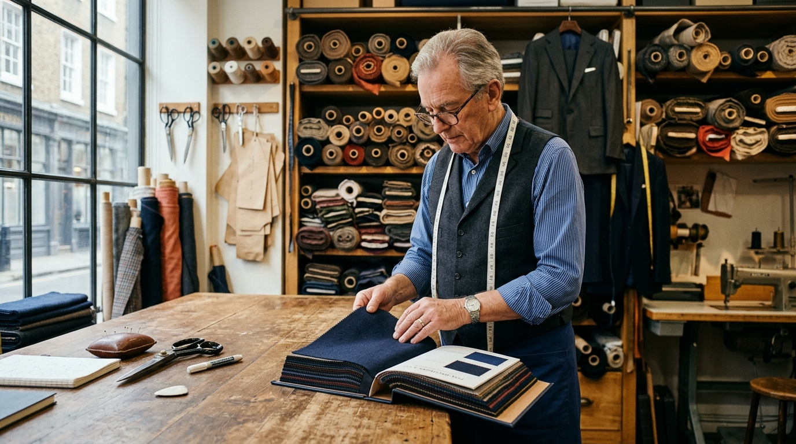

Italian 35 Momme Mulberry Silk
Hypoallergenic natural filament silk with buttery softness, fluid drape, and natural lustrous sheen. Ideal for bridal blouses, saree borders, and gala evening gowns.

Pure Irish Flax Linen
Naturally textured, moisture-wicking and exceptionally crisp. Softens with every wash. Perfect for tailored resort shirts, summer blazers, and lightweight trousers.

Super 150s Australian Merino Wool
Spun from ultra-fine 16-micron fibers for supreme wrinkle-recovery, breathability, and natural four-season temperature control. The gold standard for bespoke suits.

Egyptian Giza 88 Extra-Long Staple
Handpicked along the Nile Delta, offering silky smoothness and extraordinary durability. Tailored into luxurious bespoke dress shirts, resort tunics, and fine garment linings.

Royal Micro Plush Velvet
Dense, light-absorbing emerald pile with rich depth of color and supreme softness. Used for designer blouse backdrops, evening jackets, and royal sherwanis.

Heritage Banarasi Gold Zari Brocade
Authentic handloom zari weaving featuring floral kadwa patterns and real metallic threads. Unsurpassed magnificence for bridal lehengas and festive dupattas.

Pure Mongolian Brushed Cashmere
Downy undercoat fibers from high-altitude Mongolian goats combed into feather-soft, ultra-insulating luxury fleece. Ideal for winter overcoats, bespoke capes, and heirloom blazers.

French Chantilly Couture Lace
Delicate scalloped eyelash edging and intricate floral filigree over sheer silk ground. Hand-stitched onto bridal sleeves, bodice overlays, and couture evening gowns.

Artisanal Tussar Raw Silk
Hand-reeled wild silk with distinct golden luster and tactile organic slub texture. Breathable, structured, and ideal for bespoke waistcoats, blazers, and evening wear.

Heritage British Herringbone Tweed
Traditional chevron herringbone weave in earthy heathered tones. Offers weather-resistant warmth, rich texture, and enduring British tailoring charm for blazers and coats.

West Indian Sea Island Cotton Twill
The world's rarest cotton with cashmere-like softness and silky twill diagonal weave. Designed for ultra-luxurious bespoke shirts and soft-collar resort wear.

French Floral Silk Damask Jacquard
Ornate raised relief damask patterns woven with royal navy and metallic gold fibers. Perfect for structured ceremonial waistcoats, regal gowns, and bespoke tuxedos.

The Art of Natural Textile Longevity
Every natural fiber—from pure silk and Giza cotton to Australian Merino wool and Mongolian cashmere—possesses a living cellular structure. We provide bespoke fabric care advisory with every garment to ensure structural integrity and vibrancy across generations.